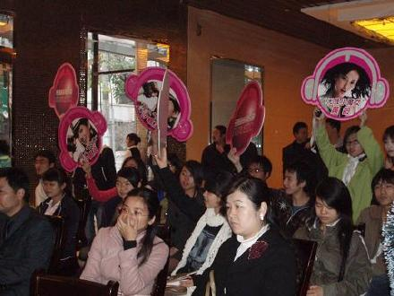
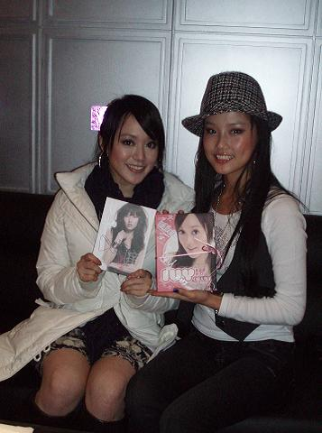

最近的工作不是很忙,这让我有了更多时间可以上上课.去福州三明是去年12月的事情了,哈.那是中国移动我的音乐地盘巡回演出的最后一站,也是最难忘的一站.之前几次都是在校园的大礼堂,这次是放在一个小型体育馆,可以容纳几千人.最热情的三明同胞们让我在那天晚上真的好想多唱几首,可是情况不允许:(
这是那天下午媒体见面会的现场

许慧欣?她的妹妹许嘉凌,和姐姐比较她好像更外向更可爱型一点,我们交换了专辑,彼此留下很好印象...

这是上次和小松77一起参加风度杂志的2周年派对.小松就不用介绍拉,超人气好男儿.王加琪是我们公司藏了3年多的秘密武器了,其实她也做了很长时间的模特,已经小有名气了,她的嗓音有一点点沙哑,很特别,也是一个很有个性的美女噢,他们两个完美组合马上就要发专辑了,希望到时候大家都去支持他们哦,相信大家会喜欢他们的.